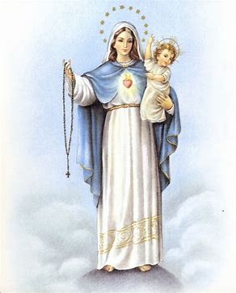

The Rosary is a Catholic prayer devotion that draws us closer to Jesus and Virgin Mary by reflecting key moments in their lives. It uses beads or a string of knots to count prayers. The Rosary is an ancient practice that spans Hindu, Buddhist, Muslim, and Christian traditions. According to Catholic tradition, Mary gave the Rosary to St. Dominic when she appeared to him in 1214. In 1520, Pope Leo X approved it for use by lay people (all people who are not part of the clergy but play important roles in the church community). In those days, many people were illiterate, and the Rosary allowed anyone to pray with familiar words from scripture. To pray the Rosary, you begin with the Apostles' Creed, followed by one Our Father, three Hail Marys, and one Glory Be. Then you'll pray a "decade" of the Rosary, which is one Our Father, ten Hail Marys, and one Glory Be. During this, meditate on one of the "Mysteries of the Rosary". These mysteries focus on significant events in the lives of Jesus and Mary broken into four categories: the joyful mysteries, the luminous mysteries, the sorrowful mysteries, and the sorrowful mysteries. These moments are profound and mystical and deserve time and meditation to appreciate. Repeating the Hail Mary allows you heart to think about these mysteries. Once you've prayed 5 decades, wrap things up with a Hail Holy Queen and a Rosary Prayer, a big Amen and a sign of the cross. Remember that praying the Rosary helps us carve out intentional time for God, increase our compassion toward others, and receive guidance in times of trouble. The Rosary can be prayed anywhere and is a prayer for everyone. So, wherever you may be in your relationship with God (even if you're struggling), give the Rosary a try. Open your heart to how this profound encounter with Jesus and Mary could change your life.
